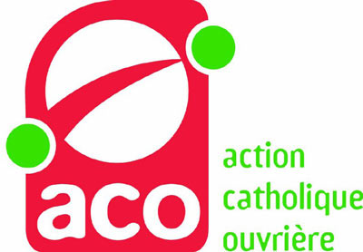
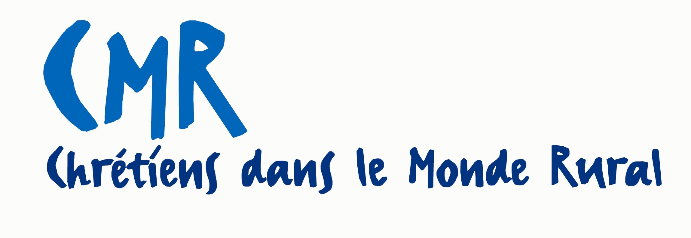
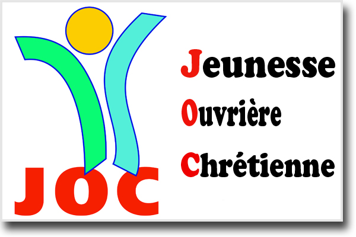
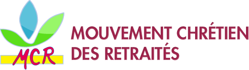

Paroisse Notre Dame de l'Assomption
Ham
Ham

Leur actualité :
à vous la parole!
n'hésitez pas à nous contacter pour enrichir cette page
Qu'est-ce que l'Action Catholique Ouvrière ?
 L'Action Catholique Ouvrière fait partie de la « Mission ouvrière », qui regroupe également la JOC (Jeunesse ouvrière chrétienne), l'ACE (Action catholique des enfants), les PO (prêtres ouvriers), et les religieux et religieuses en monde ouvrier.
L'ACO, Action Catholique Ouvrière rassemble environ 16 000 membres en France.
Les membres se retrouvent régulièrement (une fois par mois environ) en petites équipes appellées équipes de « révisions de vie ». Là,il s'agit de partager notre vie de tous les jours : famille, quartier, travail, engagements dans des organisations ouvrières, partis politiques ou des associations par le débat et l'écoute de la Parole de Dieu.
site de l'ACO : ici
Leur actualité :
à vous la parole!
n'hésitez pas à nous contacter pour enrichir cette page
Qu'est-ce que le mouvement Chrétien du Monde Rural?
 L’association française Chrétiens dans le Monde Rural rassemble douze mille adhérents engagés sur leurs territoires ruraux dans la vie communale, syndicale, associative ou religieuse. Elle accompagne ses adhérents dans leurs engagements en proposant des formations, des débats et des outils de réflexion.
Répartis dans quatre-vingt-dix fédérations, les mille deux cents équipes composées d'une dizaine de personnes se retrouvent pour partager des faits de vie, des faits d'actualité de la société ou de l'église, leur citoyenneté et leur engagement. Ils se rencontrent sept à huit fois par an. Les équipes sont accompagnées par des prêtres, des diacres, des religieuses ou des laïcs pour les aider dans leur discernement.
site du CMR : ici
Leur actualité :
à vous la parole!
n'hésitez pas à nous contacter pour enrichir cette page
Qu'est-ce que la Jeunesse Ouvrière Chrétienne?
 La JOC est une association qui oeuvre à l’insertion des jeunes dans la société et dans la vie. Depuis plus de 80 ans, elle propose aux jeunes de se rassembler et leur offre les moyens concrets de mettre en œuvre des projets qu’ils auront eux-mêmes définis. Animée par les jeunes eux-mêmes (une JOC "avec, pour et par des jeunes"), la JOC lutte contre leur exclusion et vise à favoriser leur autonomisation en développant des solidarités actives.
La JOC offre aux jeunes des espaces pour se rencontrer, s’exprimer, débattre et agir ensemble. En dispensant des formations, en donnant accès à l’information et en favorisant la réalisation de projets personnels ou collectifs, la JOC donne à chacun les moyens de devenir acteur de sa vie.
En France, ce sont 10 000 jeunes de 15 à 30 ans, en formation, au travail ou en précarité, qui agissent pour :
- Bousculer les a priori en montrant des jeunes solidaires et engagés
- Permettre aux jeunes d’être autonomes en devenant les vrais acteurs de leur orientation professionnelle, en accédant à un emploi et au logement.
- Favoriser le vivre ensemble et le lien social, particulièrement dans les quartiers populaires.
site du JOC : ici
Leur actualité :
à vous la parole!
n'hésitez pas à nous contacter pour enrichir cette page
Qu'est-ce que le Mouvement Chrétiens des Retraités?
 Le Mouvement Chrétien des Retraités (MCR) est un mouvement d'action catholique créé à l’initiative de laïcs retraités et au service des retraités. La retraite est une période de temps d'une durée d'une trentaine d'années. La mission du MCR est d’aider les retraités à bien vivre cette étape. La retraite peut être un temps d’enrichissement et d’approfondissement personnels.
Le MCR se veut un lieu où se développent l’entraide et la convivialité. Il accueille, au sein d’équipes de styles bien différents, des nouveaux retraités jusqu’aux grands aînés.
Le MCR est un mouvement de laïcs reconnu et encouragé par la Conférence des évêques de France. Il agit pour que la place des retraités dans la société soit plus effective et mieux reconnue. Dans ce but, il entretient d’actives relations avec des partenaires publics ou privés.
site du MCR : ici
Site officiel de la paroisse de Ham maintenu par paroisseNdaHam@gmail.com - dernière mise à jour le 06/04/2015 - pour nous contacter